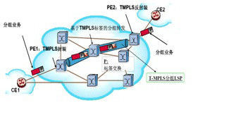
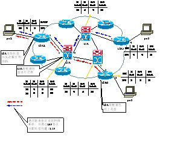

隧道
在基于MPLS技术的设备组成的网络中，隧道用于标识端到端的逻辑连接的特性。我们可以将隧道简单理解为从出发点到终结点的一条通路。
隧道机制
隧道技术是一种通过互联网络基础设施在网络之间传递数据的方式。使用隧道传递的数据可以是不同协议的数据帧或包，隧道协议将这些其它协议的数据帧或包重新封装在新的包头中发送，被封装的数据包在隧道的两个端点之间通过公共互联网络进行路由，一旦到达网络终点，数据将被解包并转发到最终目的地。整个传递过程中，被封装的数据包在公共互联网络上传递时所经过的逻辑路径称为隧道。
简言之，隧道技术是指包括数据封装，传输和解包在内的全过程。

如图1所示，从PE1经过P 节点的到PE2 的MPLS-TP/MPLS 双层标签转发路径包括，通道层（内层标签 伪线）和通路层（外层标签 隧道），通道层仿真客户信号的特征，并指示连接特征，通路层指示分组转发的隧道。客户CE1 的分组业务（以太网、IP/MPLS、ATM、FR 等）在PE1 边缘设备加上T-MPLS标签L1（双层标签），经过P 中间设备将标签交换成L2（双层标签，内层标签可以不交换），边缘设备PE2 去掉标签，将分组业务送给客户CE2。

如图2所示，为PTN网络中隧道转发原理。通过一系列的隧道标签交换完成数据报文从源节点到宿节点的转发。对于标签的生成可以采用人工配置的静态标签，也可以采用路由及标签分配协议生成的动态标签。对于采用静态标签转发的隧道，我们称之为静态隧道。对于协议生成动态标签转发的隧道，我们称之为动态隧道。
参考资料
- 沈庆伟，张霖. 基于隧道的IPv4/IPv6过渡技术分析． 《 计算机技术与发展 》 ， 2007
- 程思，程家兴. VPN中的隧道技术研究． 《 计算机技术与发展 》 ， 2010
- 韩风，施寅. Http隧道在穿越NAT/防火墙技术中的应用． 《 计算机技术与发展 》 ， 2006
- 张平，李春青. IPv4与IPv6隧道技术的研究及实现． 《 计算机技术与发展 》 ， 2012
- 李方敏，叶澄青. 安全Web隧道技术． 《 计算机应用 》 ， 1999